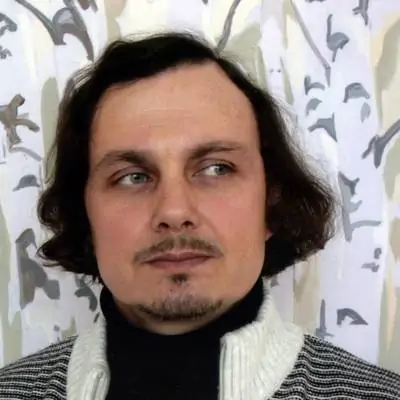
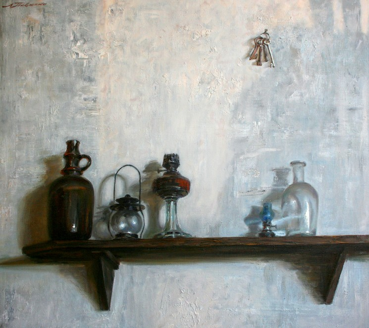
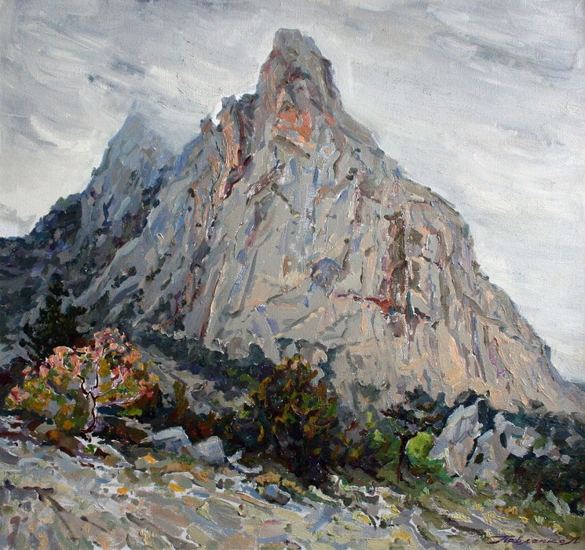
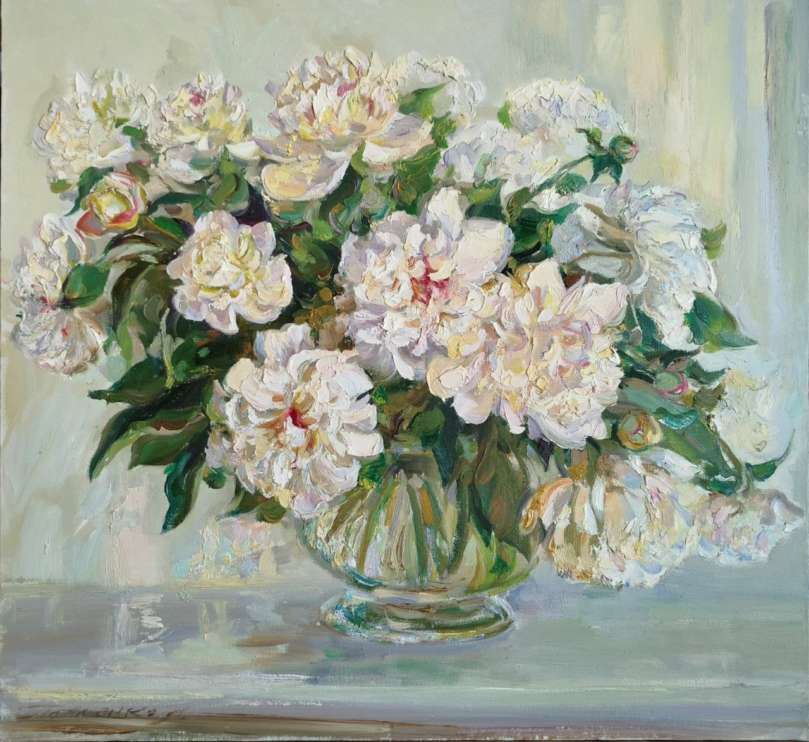
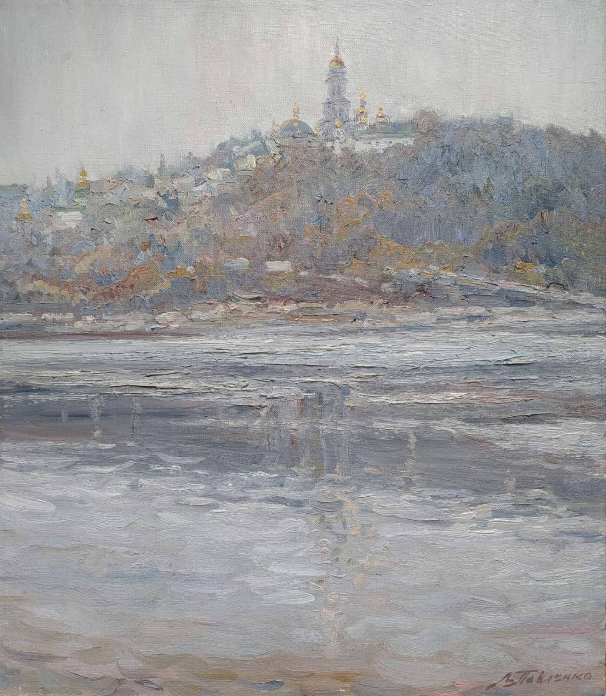

About Leonid Pavlenko

Leonid Pavlenko was born on 23 April 1970 in Bondarivka, Zhytomyr region, Ukraine. He is a Ukrainian painter who works with portraits, still lifes, landscapes and story-based scenes. His paintings are known for calm colours, soft light and a sense of harmony. Painting is the main part of his life, and each work reflects his love for nature and people and his wish to keep Ukrainian artistic traditions alive.
Leonid Pavlenko teaches at the M. Boichuk Kyiv State Institute of Decorative and Applied Art and Design, where he helps young artists develop their skills and find their own style.
His artworks are held in the collections of the National Academy of Fine Arts and Architecture, the Zaporizhzhia Regional Art Museum and in private collections in Ukraine, the USA, Bulgaria, Germany and Israel. He has taken part in more than 120 exhibitions in Ukraine and abroad.
He studied at the Children's Art School in Korosten (1985), the M. Hrekov Odesa State Art School (1990) and later at the National Academy of Fine Arts and Architecture (2002) under professors A. Lopukhov and H. Yahodkin. In 2005 he completed the Creative Workshops of the National Academy of Fine Arts and Architecture with professor V. Hurin. Since 2003, he has been a member of the National Union of Artists of Ukraine.
Main Works
- Winter (1994, 1996)
- April Flicker (1995)
- Still Life (1996)
- Birches (1997)
- Still Life with Daisies (1997)
- In the Crimean Mountains (1998)
- September (1998)
- Vydubychi Monastery, Kyiv (1999)
- The Thorny Road (2000)
- Inlaid Shadows (2000)
- Still Life with the Firebird (2000)
- St. Michael's Golden-Domed Monastery (2001)
- White Lace (2001)
- The World of Mary (2002)
- Near the Lower Caves (2004)
- At the Corner of Prorizna Street (2004)
- Silver Day (2004)
- On the Ros River (2008)
- Still Life with Grandmother's Towel (2011)
- Marigolds (2011)
- Mother's Kerchief (2011)
- In the White Paws of Winter (2012)
- Winter Tale (2013)
- Blue-and-Yellow Still Life (2013)
- Sun-Worshippers (2015)
- Christmas in Kyiv (2016)
- Drevlyan Guardians (2017)
- Maple Path (2017)
- Lupine Blossoms (2021)
- Spring in Nahuievychi (2022)
- Scorched by War (2023)




Exhibitions
- 1994 - “Picturesque Ukraine”, Uzhhorod
- 1995 - All-Ukrainian art exhibition dedicated to the 400th anniversary of the birth of B. Khmelnytsky, Kyiv
- 1997 - All-Ukrainian Art Salon, Kyiv
- 1999 - “Autumn Salon”, Artist House, Kyiv
- 1999 - Personal exhibition “Crimea - Carpathians”, gallery “Mykola House”, Kyiv
- 2000 - “Youth Exhibition”, Kyiv
- 2000 - All-Ukrainian art exhibition for the 2000th anniversary of the Nativity of Christ, Kyiv
- 2000 - Congress of Young Artists, plein air, Karpaty
- 2001 - Congress of Young Artists, plein air, Simeiz
- 2001 - “Picturesque Ukraine”, Ivano-Frankivsk
- 2002 - “Picturesque Ukraine”, Donetsk
- 2002 - Personal exhibition “The Breath of Spring”, Museum of the National Academy of Fine Arts and Architecture, Kyiv
- 2003 - “Youth Exhibition”, gallery “Lavra”, Kyiv
- 2003 - Congress of Young Artists, plein air, Sedniv
- 2003 - Exhibition with students of NAAFA, Kryvorivnia village, Ivano-Frankivsk region
- 2004 - All-Ukrainian Autumn Art Exhibition, Kyiv
- 2005 - “Kyiv Suite”, Artist House, Kyiv
- 2005 - “Picturesque Ukraine”, Poltava
- 2006 - “Ukraine from Trypillia to the present in the images of contemporary artists”, Kyiv
- 2006 - “Kyiv Painting”, Artist House, Kyiv
- 2006 - Personal exhibition, gallery “Accord”, Zhytomyr
- 2007 - All-Ukrainian art exhibition “Christmas”, Artist House, Kyiv
- 2007 - Personal exhibition together with M. Orlova, gallery “Griffin”, Kyiv
- 2008 - Personal exhibition together with M. Orlova, House of the Collegium, Chernihiv
- 2009 - “Ukraine from Trypillia to the present in the images of contemporary artists”, Kyiv
- 2009 - All-Ukrainian Autumn Art Exhibition, Kyiv
- 2010 - All-Ukrainian art exhibition “Christmas”, Artist House, Kyiv
- 2011 - International plein air “Day of the Dnipro”
- 2011 - Exhibition “Dnieper, A Moment and Eternity”, exhibition hall, Academy of Municipal Management, Kyiv
- 2012 - Exhibition “Glory to Galicia!”, Ternopil
- 2012 - International plein air “Frumushika-Nova”, Odesa
- 2013 - Exhibition “Beauty of the Carpathians”, Art Museum of Prykarpattya, Ivano-Frankivsk
- 2013 - Personal exhibition, M. Boichuk Kyiv State Institute of Decorative and Applied Art and Design
- 2014 - Personal exhibition of paintings, Artist House, Kyiv
- 2014 - All-Ukrainian Art Salon, Artist House, Kyiv
- 2014 - All-Ukrainian art exhibition dedicated to the 200th anniversary of Taras Shevchenko, Artist House, Kyiv
- 2015 - All-Ukrainian art exhibition “Christmas”, Artist House, Kyiv
- 2015 - Personal exhibition of paintings, National Bank of Ukraine, Kyiv